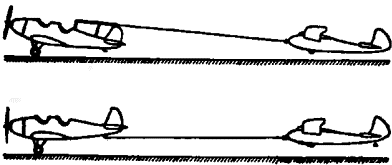
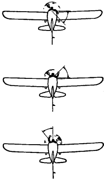
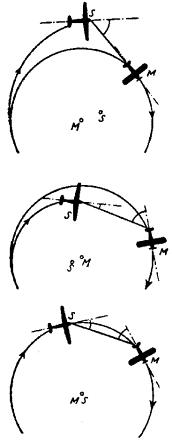
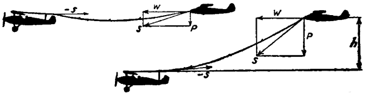

Manual del Vuelo a Vela
Wolf Hirth
1942
Enseñanza de remolque por avión
por
PETER RIEDEL
La enseñanza del remolque por
avión es actualmente una ampliación del aprendizaje del vuelo a vela con apoyo
térmico. Como profesor de vuelo remolcado que fui en Griesheim, en los anos 1932 y
1933, pude recoger gran cantidad de experiencias, de las cuales voy a exponer aquí lo
más fundamental.
El remolque por avión es, sin duda, el método más sencillo para aprender la técnica
del vuelo térmico. La posibilidad meteorológica de poder hacer vuelo a vela sobre
ascendencia térmica se presenta en los meses de verano, cada dos días, si no más
frecuentemente.
(N. del T. - No disponemos de datos suficientes de
nuestro país para hacer una afirmación del género de la que hace el autor, es decir, de
la probabilidad de térmica en España en el verano.
Lo que puede decirse es que esa probabilidad será muy
diferente en las distintas comarcas, puesto que el clima de todas ellas es muy distinto,
y su análisis y estudio detallado llevaría demasiado lejos, sin poder llegar a
conclusiones definitivas por la mencionada falta de datos.
Únicamente podemos decir que en la región central será
ya grande la probabilidad de térmica en los meses de primavera.
Así, por ejemplo, se cita el sondeo de temperatura
realizado con un globo sonda lanzado en Madrid el 11 de mayo de 1932 a 18 h. que,
alcanzando una altura máxima de 14700 m. sobre el mar, aterrizó a 66 km. al este de
Madrid. En el suelo había a esa hora una temperatura de 23º y a 1000 m., es decir, unos 300 m. sobre el terreno, 18º, con
un descenso de 5º; y a 2000, 8º, con
un descenso de 10º; todo lo cual indica que a esa hora ya avanzada de la tarde, el aire
era muy lábil, por lo tanto ese día seria seguramente de excelentes condiciones para el
vuelo térmico, sin nubes por ser el aire muy seco.
El 26 del mismo mes a 13 h. las condiciones eran mucho
mejores: en el suelo 19º
y, a 1000 m., 9º, es
decir un descenso de 10º en 300 m. y luego otro de 8º en
cada 1000 m. siguientes hasta los 5000, para seguir con mayor enfriamiento después; toda
la masa de aire era muy lábil; el viento del W, y la nubosidad de cu abundantes; habrían
podido hacerse notables vuelos con apoyo térmico.
Casos análogos se encuentran en el mes de junio del mismo
año, que es el que tenemos ante la vista, al hacer estas breves consideraciones.
En cambio, ya en este mes hay peores días, como el 9 en
el que, a 13 h., es decir, en las de máxima insolación, había en el suelo 27º y a 1000 m. 21º, pero a 2000 habla los mismos 21º, con lo que
las ascendencias sólo tendrían 300 m. de espesor, pues estarían completamente frenadas
por esa isotermia.
En el mes de julio se encuentran, en su primera quincena,
buenos días de térmica, como el 13 en el que, a 18 h., a la caída de la tarde, hay nada
menos que 6º de descenso de temperatura desde el suelo hasta los 1000 m. y
luego 11º en los 1000 m. siguientes.
Pero luego, ya en la llamada canícula, las condiciones
son peores: en el 28 de julio a 7 h. existía el siguiente régimen: en el suelo 20º; a
1000 m. los mismos 20º y a 2000, 19º; a 3000, 15º, es decir, todas las señales de un aire « envejecido » y con un equilibrio muy estable. El mismo día, a 13 h. la
temperatura en el suelo era de 30º; a 1000 m. 27º y a 2000, los mismos 19º de antes; es decir, el efecto del suelo había sido calentar la
capa inferior, probablemente con ascendencias pequeñas y diseminadas, dado también el
que en esta época todo el terreno, ya con la cosecha segada, presenta caracteres muy
uniformes para la radiación solar.
En septiembre los caracteres son otoñales: es la época
de menos « meneo » en el vuelo, es decir, de aire muy estable. El sondeo del 15 de
ese mes, en el año a que venimos refiriéndonos, marca en el suelo, 19º; a 1000, 19º, a 2000 m. 18º.
El mes de enero es el peor para intentar apoyo térmico:
así en este mes del año 1934, en toda la capa desde el suelo a 2000 m la temperatura era
uniforme de 3º, a 18,30 h. del día 10. El día 28, a 7 h., en el suelo había 0º y a 1000 m. 2º, que se extendían hasta los 2000 m.
En resumen, como ya se ha dicho en otro lugar, la parte « seca » de la península Ibérica ha de tener excelentes condiciones
para el vuelo a vela con apoyo térmico desde la iniciación de la primavera hasta el
centro del verano, para decaer estas condiciones hacia el otoño y centro del invierno.
La costa mediterránea y la extrema Andalucía tienen
caracteres distintos, pues en Sevilla muchas veces un sondeo de temperatura ha revelado
isotermia hasta niveles un tanto altos.
Luego están los fenómenos específicos del Estrecho de
Gibraltar.
Solamente estudios especiales pueden permitir establecer
conclusiones definitivas.
Lo dicho ahora, unido a las otras consideraciones hechas
con motivo de otros temas de los tratados en el texto, creemos que es suficiente para
poder aplicar a España todos los razonamientos que en aquél se hacen aplicados a
Alemania.)
El avión de motor va volando a la altura del horizonte,
visto desde el velero, y el alumno deberá acostumbrarse, desde el principio, a mirar al
horizonte y no hacia abajo. Una vez desembragado a gran altura sobre el terreno, el alumno
se ejercitará en virar, primero en arco de gran radio y después haciendo viradas más
ceñidas. Si hace una falsa maniobra, tiene altura bastante para hacerse otra vez con el
aparato. Para el alumno que ha aprendido en ladera es muy conveniente que, en esa buena
altura, se ejercite en describir círculos completos.
Pasaremos ahora a exponer algunos detalles de la enseñanza. Puede
decirse, desde luego, que, en general, cualquier avión que sea de vuelo lento sirve como
avión remolcador, siendo lo más importante que tenga buenas propiedades de vuelo en el
vuelo lento, es decir, en posición de máximo encabritamiento. En cuanto a la
velocidad, no se puede dar limite preciso, puesto que los taquímetros raramente dan
indicaciones rigurosamente exactas y los veleros tienen también velocidades muy
diferentes. El piloto remolcador debe hacer que su avión vuele correctamente y que, a
plenos gases, vaya lento sin dejar de sentir el efecto de mando transversal, que siempre
será pequeño en ese estado de vuelo. La presión dinámica más apropiada es la
correspondiente a 15 km/hora más de velocidad que la que tiene el avión subiendo a
plenos gases, con la pendiente límite que permita todavía eficacia de mando. No es
aconsejable emplear aviones pesados como remolcadores, sobre todo en tiempo de viento
con rachas, pues se ha visto que las rachas y consiguientes tirones del cable actúan
tanto más intensamente sobre el velero cuanto mayor es la masa y, por tanto, el peso del
avión remolcador. Por consiguiente, queda prohibido, desde luego, el caso de remolque de
avión y velero muy desiguales (fig. 88).

La
elección de avión remolcador deberá, pues, hacerse a base de la velocidad
máxima que conste en el certificado de navegabilidad del velero, la cual es, en la
mayor parte de los tipos, de 80 a 100 km/hora.
Además, hay que tener en cuenta el peso del velero, pues
se comprende que un biplaza exigirá un avión de más peso que un velero monoplaza. En
cuanto a la potencia del motor, sólo existe el límite inferior que impone la condición
de poder ganar altura llevando ya el velero remolcado. Por otro lado, el límite superior
será, a lo menos, el número de caballos necesario para la mínima velocidad ascensional
del avión si esta mínima velocidad está por debajo de la velocidad máxima del velero,
no hay caso de hablar de remolque en esas condiciones.
Los aviones que tengan barquilla descubierta para el
piloto y buen campo de vista son preferibles a los aviones con cabina. En todo caso es
indispensable el uso de un espejo curvo retrovisor, pues el piloto del
avión debe siempre tener a la vista el velero, aunque éste vaya tripulado por un piloto
experimentado. El piloto del remolcador debe saber bien claramente que se encontraría en
situación peligrosa si, inesperadamente, se desembragase el velero a poco de envolar,
es decir cerca del suelo, sin que él lo notase, pues en tal caso el cable de remolque
podría enredarse en algún obstáculo y determinar tal pérdida de velocidad que
produjese su caída. Esta sola consideración, sin contar con otras causas de peligro,
basta para hacer ver la imprescindible necesidad de llevar retrovisor.
El montaje del órgano adecuado para empalmar al avión el
cable de remolque se hace hoy generalmente en el patín o en la rueda de cola. El
desembrague se hace con un cable o tirante de Bowden (como se sabe, se llama así el cable
de transmisión flexible. - N. del T.).
La enseñanza con vuelo remolcado tiene la gran ventaja de
que el profesor mismo es el que va conduciendo el avión remolcador y así, acomodándose
a los posibles errores del alumno, puede restablecer la situación, si no fuese la debida.
Con los alumnos que se consideran en condiciones de
aprender el vuelo remolcado se pueden hacer dos grupos:
1.º Pilotos de velero con
título C.
2.º
Pilotos de avión de motor.
Como el
estado de vuelo en el remolque se puede comparar con el vuelo en escuadrilla, un piloto
de avión ordinario se habitúa pronto a ese género de vuelo, y la impresión de novedad
desaparece al primer vuelo remolcado. Es necesario, naturalmente, que antes de envolar se
dé al alumno una explicación completa de todo lo que debe hacerse en el vuelo, y claro
es que los primeros vuelos se harán en días de buen tiempo. La explicación se
acomodará a las circunstancias de los alumnos.
1.º
Pilotos de título C.
a) Enseñados en ladera.
b) Enseñados por remolque en auto.
2.º Pilotos de avión.
Es
necesaria esta distinción por los diferentes elementos de juicio y diferentes hábitos
que tendrá cada alumno. Así un alumno que haya hecho solamente su aprendizaje en ladera
podría tener dificultades, al volar en terreno llano, para apreciar la altura, y en
cambio, con las correspondientes explicaciones, se conducirá en el vuelo normalmente. Se
le darán, por tanto, explicaciones que le faciliten el aterrizaje en el aeródromo, al
terminar el planeo que seguirá al vuelo remolcado. El mejor medio es llamar
simbólicamente ladera al lado del aeródromo opuesto al del emplazamiento del torno,
recordando el lugar en el que ya tienen costumbre de volar algunos alumnos. Se les dirá
que deben volar en la forma acostumbrada en esta « ladera », virando siempre para
mantenerse contra el viento con idas y vueltas, hasta que la tierra esté tan cerca que
pueda, en un planeo, alcanzar el lugar de aterrizaje. Los alumnos de velero que han sido
enseñados con auto, tienen tendencia a encabritar después del envuelo lo mismo que
hacen en el caso del remolque con torno. Hay que hacerles ver claramente que el envuelo
remolcado por avión es muy distinto y que, en este caso, tirar mucho de la palanca es
un error.
Los pilotos de avión tienen a menudo tendencia a estar
intranquilos cuando tripulan por primera vez un velero, al no sentir la sensación de
presión en los mandos, y así se nota que tienen excesiva timidez en el manejo de los
timones.
Antes de emprender el primer vuelo remolcado es
condición precisa convenir señales determinadas para entenderse con los pilotos, si no
se cuenta con enlace telefónico, las cuales servirán para que el profesor haga
comprender al alumno si hace o no las maniobras correctamente. Como la mayor parte de las
faltas tienen por causa no mantener la altura debida respecto al avión remolcador, se
limitan esas señales, casi siempre, a las que aquí se indican.
En las figuras 89 a 91 se representan las señales que en
la práctica han dado buen resultado.

La
señal más importante es la de desembragar, la cual nunca debe dar lugar a confusiones,
haciéndole ver al alumno que en todo momento la debe atender y cumplirla inmediatamente.
Si el alumno empezase a cometer faltas de un modo extraordinario, es aconsejable siempre
hacer la señal de desembragar antes de que pudiera llegarse a una situación crítica.
Hay que poner atención especial en no desembragar del
lado del avión. La experiencia enseña que el alumno que se encuentra en tal caso se pone
casi siempre nervioso y puede olvidar soltar el cable que queda colgando de la proa de su
velero y no es necesario decir que acercarse al suelo con el cable pendiente del velero
encierra grave peligro.
Por otra razón es necesario obedecer en seguida la señal
de desembragar. En mi actividad como profesor de vuelo en Griesheim, en los veranos de
1933 y 1934, tenía yo como principio del método empleado para enseñar llevar al alumno
a una ascendencia enérgica y hacer la señal de desembragar cuando le tenía en el centro
de ella. La señal quería decir en este caso: desembragar y en seguida virar. Si el
alumno obedecía al punto la señal, se encontraba seguramente en el lugar preciso para
aprovechar la ascendencia y sólo
necesitaba virar para no salirse de ella. Por el contrario, si el alumno no estaba
atento y no veía la señal, había desperdiciado el momento oportuno y cuando
desembragaba se encontraba precisamente en la zona descendente.
Por estas razones es preferible hacer los primeros
vuelos solamente como ejercicio de remolque para aprender la técnica propia de este vuelo
y éstos con aire tranquilo, es decir, a las primeras horas de la mañana o a la caída de
la tarde, y después de haber hecho dos o tres vuelos remolcados y cuando ya se
conozca su técnica, entonces se podrán hacer los vuelos para buscar el apoyo térmico a
las horas de mediodía.
Ahora se dirá algo sobre el primer envuelo remolcado tal
como se practicaba en Griesheim en los años 1933 -1934. Los dos aviones se colocan uno al
lado de otro en el aeródromo; se engancha el cable y entonces el remolcador rueda hasta
poner el cable tirante. Las señales convenidas eran:
brazo derecho bajo, que significaba volar más bajo (fig.
89); extender rápidamente el brazo derecho hacia arriba (fig. 90), que quería decir
volar más alto. Al hacer estas señales se llevaba un pañuelo blanco en la mano. Mover a
un lado y otro la mano izquierda sobre la cabeza, quería decir soltarse y en seguida
virar (fig. 91). Al alumno se le advertirá que debe mantener su vuelo a unos 10 a 15 m.
sobre el avión y conservar esta altura, volando exactamente detrás del remolcador, sin
desviarse a un lado o al otro. Al ver las señales, el alumno no debe maniobrar
bruscamente modificando rápidamente la altura, sino que hará la maniobra suavemente y
seguida, hasta que cese la señal. Muchas veces colocaba yo un hombre 100 a 150 m. por
delante, al envolar, para que hiciese una señal cuando el velero pasase a su altura
después de elevarse.
Cuando todo estaba ya preparado para envolar, metía gases
y observaba al velero por el espejo. Si se elevaba demasiado, hacía la señal de «
volar más bajo » hasta que el alumno, obedeciendo la señal, lo hacia así
efectivamente. Muchas veces me ocurrió que el alumno picaba en seguida de despegar y que
picaba tanto que no podíamos subir; entonces reducía gases y hacía la señal hasta que
el alumno tiraba suficientemente de la palanca.
Es necesario llevar en el remolcador un variómetro cuando
la práctica del vuelo remolcado tiene el objeto, como generalmente sucede, de enseñar
a volar con apoyo térmico, pues ese instrumento permite al piloto del avión, el cual
naturalmente será piloto de velero, encontrar las ascendencias durante el vuelo
remolcado. Especialmente sirve el instrumento para proceder como antes se ha dicho, es
decir, llevar al alumno hasta el centro de la ascendencia y allí dar la señal de
desembragar. Observando simultáneamente el variómetro y, por el retrovisor, el velero,
el piloto puede perfectamente darse cuenta de las corrientes de aire que sobre éste
actúan. Al entrar en una ascendencia verá el piloto que el velero queda por debajo del
avión y, después de algunos segundos, cuando el velero entra también en la ascendencia,
le verá elevarse en el espejo. Según que ya en este momento el avión se encuentre en
la zona descendente o todavía esté también él en la ascendente, así apreciará el
piloto del avión la magnitud de la ascendencia y decidirá si debe hacer o no la señal
de desembragar. El piloto podrá también juzgar de la intensidad de la ascendencia
observando en el variómetro la velocidad ascensional y deduciendo de ella la que
existe, sin más que restar, de la observada, la velocidad ascensional normal del avión
cuando lleva remolque.
La unión entre el avión y el velero se hace mediante el
cable de remolque. El Instituto alemán de experimentación para el vuelo a vela ha hecho
estudios sobre el remolque con cable de cáñamo, los cuales han sido publicados (véase Luftwissen, Vol. V, núm. 12, diciembre 1938, Págs. 443-444) y
representan una valiosa contribución al conocimiento del problema del cable de remolque,
profundizando más en él. Aquí solamente se dirá que, según mi propia experiencia, el
cable de cáñamo es preferible, con mucho, al de acero. Su mayor extensibilidad y mejor
visibilidad durante el vuelo y hasta el no tener tan elevada resistencia a la rotura,
hacen que sea mucho mejor emplear el primero que el segundo. El cable de cáñamo deberá
emplearse siempre con igual orientación, es decir, un mismo cabo siempre en el avión,
por ejemplo, pues de este modo al arrastrar por la tierra al caer después del vuelo, las
fibras se aprietan contra el cable; si se emplease «a contrapelo» las fibras se
levantarían y, con el uso, se romperían, acortando mucho la vida del cable. La longitud
del cable suele ser, y además así figura en las instrucciones oficiales, de 80 a 150 m.
Los veleros que vayan a ser remolcados se proveerán de un
tren de partida arrojable, cuyo empleo acorta notablemente el rodaje necesario y
desgasta menos el cable. Si se trata de principiantes, es más sencillo para ellos hacer
el primer envuelo sobre el patín, puesto que así el alumno no tiene tantas novedades en
qué fijar su atención: podría olvidar arrojar el tren de partida a pequeña altura y
después verse obligado a arrojarle desde mayor elevación. O bien, tendría que hacer
luego el aterrizaje conservando el tren, que le haría rodar mucho, quizá hasta los
límites del campo, contra su costumbre, mientras que el aterrizaje normal sobre el patín
no le causaría sorpresa alguna.
Los veleros con tren de aterrizaje de una rueda, como el
que usó Wolf Hirth, por primera vez en Alemania, creo que constituyen la mejor solución
de la tan debatida cuestión tren de aterrizaje.
Técnica del vuelo remolcado
El alumno deberá seguir también,
en las viradas, exactamente el mismo camino que siga el avión. Si permite que el velero
se entre en la curva, perderá velocidad y altura, a pesar de tirar de la palanca. Si va
con menor inclinación transversal de la debida, se irá hacia el exterior de la curva y
tendrá mayor velocidad, a causa del mayor radio del arco que describe, de modo que
ganará altura aunque empuje la palanca. Por tanto, se podrá decir que una virada está
bien hecha cuando, al terminarla, el velero se quede exactamente en la prolongación del
avión. Se ve aquí que no se deberá nunca volar en remolque desviándose hacia un
costado, puesto que entonces ocurrirá lo mismo que cuando en la virada está el velero
dentro o fuera de la curva (fig. 92).
Nunca se deberá volar con demasiada altura sobre el avión, puesto que, de lo
contrario, actuará una componente vertical excesiva en la proa del velero, y, con ello,
se empeorará el rendimiento del remolque y la velocidad ascensional será menor (fig.
93).

Fig. 92. El velero vira remolcado
Arriba, vira menos de lo debido o sea, queda hacia fuera. La consecuencia es aumento de velocidad y subir
Centro, vira demasiado o sea, entra en la curva. Se hunde con disminución de velocidad
Abajo, virada correcta, conseguida con algo de contramando de dirección. M = avión de motor. S = velero. Las mismas letras designan los centros de los arcos descritos
Finalmente,
digamos algo sobre el vuelo
remolcado con viento turbulento y sobre los tirones del cable. En estos casos la tarea del piloto
del avión es la más difícil y trabajosa. En primer lugar, tiene que esforzarse en
acomodar su vuelo al del velero que reacciona mucho más, ante las ráfagas ascendentes
y descendentes, que el propio avión. Si éste está sacudido por una racha
ascendente, deberá reducir en seguida gases, manteniendo la misma velocidad, no
debiendo, de ningún modo, dejarse llevar a más altura que el velero, el cual en ese
momento está quizá en racha descendente, pues, de lo contrario, le enviaría al velero
la turbulencia de su propia hélice. Tan pronto como el velero llegue a la misma
ascendencia, el piloto del avión puede volver a meter en seguida gases y subir ambos.
Cuando el piloto del avión note haber llegado a la descendencia deberá tratar de
mantener su altura y poner atención a lo que hace el velero. Si éste pierde altura,
ganando velocidad, el cable de remolque empezará a quedar flojo; entonces el piloto del
avión empezará a tantear aguzando su sensibilidad y empleando atinadamente el mando de
los gases, hasta que el cable recobre la tensión debida. Si el cable manifestase
tendencia a vibrar, puede oponerse a ella reduciendo gases y precisamente en el momento
en que el cable se pone tirante. El piloto del velero se puede oponer a una tensión
excesiva bruscamente tomada por el cable, picando un corto tiempo. Pero si los dos pilotos
tratan de compensar la situación simultáneamente, casi siempre el resultado es peor.

Fig. 93. La cuestión de la altura en el remolque
Izquierda, altura correcta. Derecha, altura excesiva. W = resistencia al avance del velero (supuesta constante). P = componente vertical que obra como carga perjudicial (h). S = esfuerzo resultante en el cable y para la tracción.
El arrojar
el cable sobre el aeródromo, después de soltarse el velero, debe hacerse desde 200 m. de
altura. Al soltar el cable no se debe llevar mucha velocidad, pues de lo contrario el
cable caería formando un montón confuso. Lo mismo ocurre si se suelta desde gran altura.
Arrojar el cable desde altura demasiado pequeña tiene el peligro de que puede enredarse
en un obstáculo con el consiguiente accidente, que seria grave. Además de la amenaza que
supone para el público llevar colgando un cable inclinado. Así, pues, lo que se debe
hacer es reducir gases a 200 m. de altura y arrojar el cable volando en línea recta, sin
olvidar que, en lo posible, no debe dar a nadie en la cabeza con él.
A esta exposición de Peter Riedel añade Fritz Stamer lo
siguiente, deducido de sus propias experiencias:
Los resultados obtenidos por Riedel en sus experiencias de
los años 1932 y 1933 con el vuelo remolcado tienen hoy la misma importancia que tuvieron
entonces para la enseñanza de ese vuelo, en la que son pocas las modificaciones
introducidas. Pero al aumentarse en Alemania la aviación de motor, se ofrecen con más
facilidad las posibilidades de enseñar con vuelo remolcado. A los antiguos tipos de
avio-netas, la valiente « Flamingo » y la « Klemm KL 25 » se añadieron los « KL 26
», el « Heinkel Kadett », el « Focke-Wulf-Stieglitz », el « Fieseler-Storch », el
« Arado 66 » y « 79 » y el « Heinkel He 46 ». Los veleros se han modernizado y
pueden hacer más fácilmente el vuelo, por estar dotados de regulación de timones y
mandos más eficaces, así como de alerones interruptores y frenos para el vuelo
desbocado. Siempre quedará, sin embargo, como Riedel dice, el título C de vuelo a vela,
como base para iniciar la enseñanza de vuelo remolcado.
La construcción de los veleros biplazas con excelentes
propiedades de vuelo ha introducido algunas modificaciones, pues el empleo de los biplazas
en el remolque ofrece la posibilidad de:
1.º Enseñar también el vuelo a vela a principiantes por
el método del doble mando.
2.º Probar pilotos de título C o más avanzados para
verificar su habilidad y corregir defectos que pudieron quedar o llenar lagunas que
tuviesen en su enseñanza.
3.º Enseñar
a los alumnos recursos y ardides especiales de los pilotos más expertos.
Ciertamente que en la vieja arena de Griesheim, antiguo
campo de operaciones de Riedel, se ha ensayado el velero biplaza con espléndido
resultado, habiéndose comprobado que el alumno que llega a volar correctamente por la
enseñanza en biplaza vuela luego con seguridad en cualquier velero y, sin esfuerzo,
pasa a realizar vuelos de importancia.
El profesor que, por medio del doble mando, ha quitado a
un alumno la mala costumbre de hacer viradas empleando contramando transversal y otras
chapucerías, hace que el alumno vuele solo, y vigila su vuelo, volando él en un avión
de motor, cosa que muchas veces le pasa inadvertida al alumno; si el profesor nota que el
alumno recae en los pasados errores, le vuelve inexorablemente al doble mando. Con este
método se consigue una notable elevación de la marca media de los pilotos, así como de
la habilidad, y una sensible disminución en el número de accidentes.
El empleo del biplaza en el vuelo remolcado no debe
descartar la enseñanza en ladera; sólo debe completarla y servir para dar al futuro
piloto de concurso la última pincelada.
Pero que este método abra de par en par las puertas del
vuelo sin motor al hombre aficionado al que le falta absolutamente todo el tiempo de la
enseñanza en ladera, es cosa absolutamente dentro de la realidad.
Puede haber quien opine que sería mejor llevar al
alumno directamente al avión de motor, pues así se ahorraba un piloto, un velero y el
cable de remolque. Pero esto es más económico sólo en apariencia. En realidad, un
avión de motor lleva al aire tras sí toda una serie de veleros biplazas y mientras que
el avión de motor ha empleado en total veinte minutos de vuelo, cada velero biplaza,
con profesor y alumno, se está volando durante horas con apoyo térmico sin hacer el más
pequeño gasto de combustible.
Ahora algunos detalles y resultados experimentales.
El empleo de cable de remolque de hasta 30 m. de
longitud ha dado excelentes resultados, acomodándose muy bien a los casos en que el
campo de vuelos sea de pequeñas dimensiones. Además, permite hacer mucho más ceñidas
las viradas del tren de remolque.
Cuando sean desagradables los tirones del cable o cuando
sea preciso hacer la enseñanza en lugares en los que haya mucha turbulencia, se empleará
cable de cáñamo de igual resistencia que el de acero, y como aquél tiene más
elasticidad, los tirones se amortiguan completamente. Como el cable, en la posición
inclinada que toma durante el remolque, ofrece una resistencia al aire bastante
considerable, esta misma resistencia le obliga a permanecer con más fijeza en la
dirección del viento y así el velero conserva más fácilmente la dirección debida.
El establecimiento alemán de experimentación para el
vuelo a vela ha ideado para cobrar el cable desde el avión remolcador un mecanismo
automático que ha dado excelentes resultados; sin intervención del piloto se recoge el
cable en cincuenta o sesenta segundos y así se evita la maniobra pesada, y no exenta de
peligros, de arrojar el cable después de soltar el velero, y más aún si falta un sitio
adecuado para esa maniobra.
Al principio del vuelo remolcado se organizaba el avión
remolcador montándole una armadura adicional para el remolque (En la figura 93 están
representados los aviones remolcadores con el esquema de la armadura a que se refiere el
texto. - N. del T.), pero hoy ese procedimiento ha caído en desuso y es de empleo
general el remolque desde el patín de cola.
Como el avión remolcador tiene que volar muy
encabritado, se recomienda llevar en él un segundo tubo de Pitot inclinado
convenientemente para que, mientras vuela haciendo el remolque, sea paralelo al viento
relativo ; por medio de una llave de dos direcciones se puede permutar este segundo tubo
con el normal.
El proceso descrito por Riedel que se debe seguir en la
enseñanza es el que se usa hoy corrientemente. Cuando se emplea la enseñanza en biplaza
no suelen ser necesarias las señales de inteligencia entre remolcador y remolcado. Si se
emplea tren de partida arrojable se sitúa en la dirección del envuelo un ayudante que
extendiendo ambos brazos da la señal de haber caído normalmente el tren arrojado.
Durante el remolque el velero procura mantenerse a la misma altura que el avión, con lo
que la resistencia presentada al aire por el cable es la mínima y así resulta máximo el
rendimiento del remolque, sin que sea de temer, aun con cables de remolque cortos, que
llegue al velero la turbulencia de la hélice del avión, pues pasa bastante por bajo del
velero.
Lo que Riedel dice relativamente a las viradas en remolque
subsiste hoy por completo, tal como era en el año de 1933, incluso aunque se emplee cable
de remolque corto.